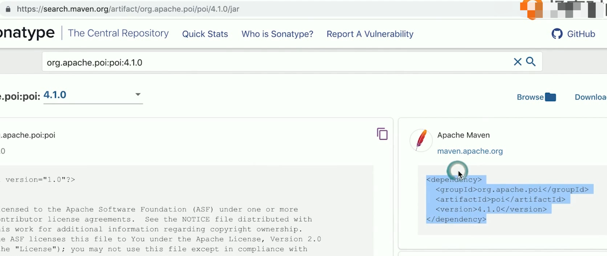
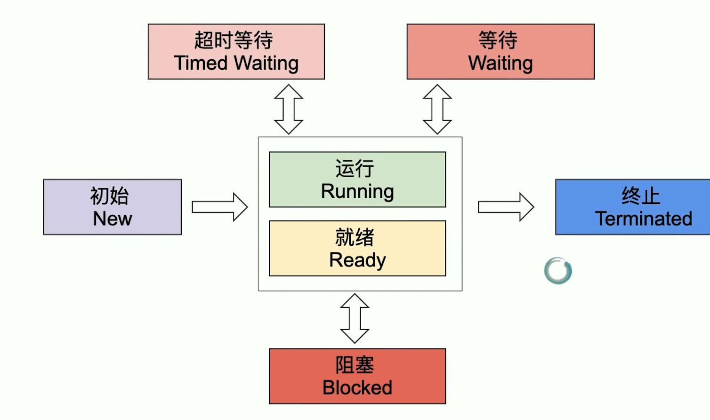
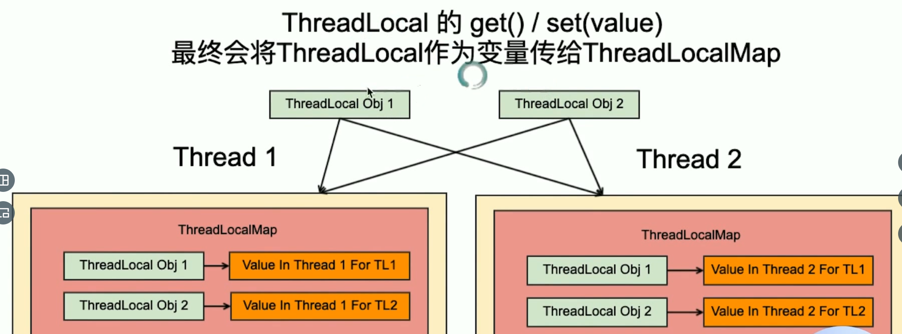

1. 快速开始 编译 1 2 3 4 5 6 7 # HelloWorld.java # 类名要与文件名一致 public class HelloWorld public static void main (String[] args) System.out.println("hi java" ); } }
1 2 3 $> javac Hello.java $> java Hello.class
idea安装 1 2 3 4 5 create new project java jdk11 Groovy next next
类型转换 1 2 3 4 int bigRandom = (int )(Math.random() * (rangeEnd * 100 ));
I/O 1 2 Scaner in = new Scanner(System.in); int guess = in.nextInt();
数组
相同类型的变量的集合，指定数组包含元素个数。
1 2 3 4 5 数组元素类型[] 变量名 = new 数组元素类型[数组长度] int [] intArray = new int [9 ];double [] doubleArray = new double [100 ];
通过 变量名[索引] , 可读写
for循环 1 2 3 4 MerchandiseV2[] all; for (MerchandiseV2 m:all) { }
文件与IO 文件
文件是操作系统对磁盘上数据的组织形式，文件包括文件路径和文件名。文件后缀其实是文件名的一部分。文件不一定要有后缀，但是一定要有文件路径和文件名，后缀是为了让操作系统更好的分辨文件的类型，以便对文件进行正确的操作
所有的文件，不管是什么后缀名，都是一堆在磁盘上的二进制数据，这些二进制数据需要被正确的解析，文件才能被正确的使用。比如pptx文件，我们也可以用文本编辑器打开它，但是文本编辑器并不能正确的解析它；
即使是压缩文件，其实也只是一个文件，它通过内部的组织，将很多文件的数据以及目录结构信息，压缩到一个文件的内容中
使用File可以判断一个路径是不是文件，文件夹，是不是存在。也可以创建/重命名/删除文件夹，文件
1 2 3 4 5 6 7 8 9 10 11 12 13 14 15 16 17 18 19 20 21 22 23 24 25 26 27 28 29 30 31 32 33 34 35 36 37 38 39 40 41 42 43 44 45 46 47 48 49 50 51 52 53 54 55 56 57 58 59 60 61 62 63 64 65 66 67 68 69 70 71 72 73 74 75 76 77 78 79 80 81 82 83 84 85 86 87 88 89 90 91 92 93 94 95 96 97 98 99 100 101 102 103 104 105 106 107 108 109 110 111 112 113 114 115 116 package com.tenon;import java.io.File;import java.io.IOException;import java.util.ArrayList;import java.util.Arrays;import java.util.List;import java.util.Scanner;import java.util.stream.Collectors;public class CreateDirAndFileApp private static final String ROOT = "." + File.separator; private static final Scanner scanner = new Scanner(System.in); public static void main (String[] args) throws IOException File dir = createDirs(); File newDir = renameDir(dir); if (newDir == null ) return ; String fileName = createFiles(newDir); String fileNameNew = renameFiles(newDir, fileName); deleteFiles(newDir,fileNameNew); deleteDir(newDir); } private static void deleteDir (File newDir) System.out.println("删除文件夹？" ); boolean deleteDir = scanner.nextBoolean(); if (deleteDir) { System.out.println("删除文件夹：" +newDir.delete()); } } private static void deleteFiles (File newDir, String fileNameNew) System.out.println("删除文件？" ); boolean deleteFiles = scanner.nextBoolean(); if (deleteFiles) { for (int i=0 ; i<20 ;i++){ File fn = new File(newDir, fileNameNew + i + ".txt" ); System.out.println("删除文件" +fn.delete()); } } } private static String renameFiles (File newDir, String fileName) System.out.println("清输入新的文件名的前缀：" ); String fileNameNew = scanner.next().trim(); for (int i=0 ;i<20 ;i++){ File f = new File(newDir, fileName+i+".txt" ); File fn = new File(newDir, fileNameNew+ i+".txt" ); System.out.println("重命名文件" + f.getName()+": " +f.renameTo(fn)); } return fileNameNew; } private static String createFiles (File newDir) throws IOException System.out.println("请输入文件名的前缀" ); String fileName = scanner.next().trim(); for (int i=0 ; i<20 ; i++) { File f = new File(newDir, fileName + i+".txt" ); System.out.println("创建文件" +f.getName()+":" +f.createNewFile()); } return fileName; }; private static File renameDir (File dir) System.out.println("请输入新的文件夹的名字:" ); String newDirName = scanner.nextLine().trim(); File newDir = new File(dir.getParentFile(), newDirName); boolean renameSuccess = dir.renameTo(newDir); if (renameSuccess) { System.out.println("改名为" + newDirName +"成功" ); } else { System.out.println("改名为" + newDirName + "失败" ); return null ; } return newDir; }; private static File createDirs () List<String> pathList = new ArrayList<>(); while (true ) { System.out.println("请输入文件路径，如果为空则结束" ); String path = scanner.nextLine(); if (path.isEmpty()) { break ; } pathList.add(path); } return createDir(pathList.toArray(new String[0 ])); }; private static File createDir (String... restPaths) String rest = joinRestDir(restPaths); System.out.println("将在" +ROOT+"下创建" +rest); File dir = new File(ROOT,rest); if (dir.exists() && dir.isDirectory()) { System.out.println("文件夹已经存在" +dir.toString()); return dir; } else { boolean createSuccess = dir.mkdirs(); if (createSuccess) { return dir; } else { throw new IllegalArgumentException("无法在" +ROOT+"下创建" +rest); } } } private static String joinRestDir (String... restPaths) return Arrays.stream(restPaths).map(String::trim).collect(Collectors.joining(File.separator)); } }
Java中支持的三种IO
IO也可以写作I/O，是Input/Output的缩写，也就是输入输出。这里的输入输出是指不同系统之间的数据输入输出，比如读写文件数据，读写网络数据等；
Java中有三代IO框架，分别是第一代的流失阻塞IO（Blocking IO），第二代的NIO（New IO）是非阻塞的，第三代NIO2（也叫AIO，async IO）又进一步支持了异步IO
在这里，学习的是流式阻塞IO，学习已经足够，也是最简单和易于理解的一种。如果是高吞吐量的生产环境下，建议使用更加优秀的netty。
1 2 3 BufferedInputStream -> FilterInputStream -> InputStream FileInputStream -> InputStream ByteArrayInputStream -> InputStream
写文件内容小程序
用Scanner读取输入，并把输入的内容写入我们指定的文件 （装饰模式，创建出来的对象，把输入的文字写入到文件）
字符集和编码
try-with-resource
1 2 3 4 5 6 7 8 9 10 11 12 13 14 15 16 17 18 19 20 21 22 23 24 25 26 27 28 29 30 31 32 33 34 35 36 37 38 39 40 41 42 43 44 45 46 47 48 49 50 51 52 53 54 55 package com.tenon;import java.io.*;import java.nio.charset.StandardCharsets;import java.util.Scanner;public class WriteToFileAppMain private static final Scanner in = new Scanner(System.in); public static void main (String[] args) throws IOException File targetFile = createFile(); writeFile(targetFile); System.out.println("程序执行结束" ); } private static void writeFile (File targetFile) throws IOException try ( FileOutputStream fos = new FileOutputStream(targetFile); OutputStreamWriter osw = new OutputStreamWriter(fos, StandardCharsets.UTF_8); PrintWriter pw = new PrintWriter(osw); ) { System.out.println("输入的内容会实时写入文件，如果输入空行则结束" ); while (true ) { String lineToWrite = in.next().trim(); System.out.println("输入内容为：" + lineToWrite); if (lineToWrite.trim().isEmpty()) { System.out.println("输入结束" ); break ; } else { pw.println(lineToWrite); pw.flush(); } } } catch (Exception ex) { ex.printStackTrace(); } } private static File createFile () throws IOException System.out.println("请输入文件名：" ); String fileName = in.nextLine().trim(); File f = new File("." + File.separator + fileName + ".txt" ); if (f.isFile()) { System.out.println("目标文件存在，删除：" + f.delete()); } System.out.println(f.createNewFile()); return f; } }
读文件 1 2 3 4 5 6 7 8 9 10 11 12 13 14 15 16 17 18 19 20 21 22 23 24 25 26 27 28 29 30 31 32 33 34 35 36 37 38 39 40 41 42 43 44 45 46 47 48 package com.tenon;import java.io.*;import java.nio.charset.StandardCharsets;import java.util.Scanner;public class ReadStringFromFileApp private static final String SOURCE_FILE_NAME = "测试文件.txt" ; public static void main (String[] args) throws IOException File sourceFile = new File("." + File.separator + SOURCE_FILE_NAME); Scanner in = new Scanner(System.in); classicWay(sourceFile); coolerWay(sourceFile); } private static void classicWay (File sourceFile) throws IOException System.out.println("--------经典的处理方式-------------" ); try ( FileInputStream fis = new FileInputStream(sourceFile); InputStreamReader isr = new InputStreamReader(fis, StandardCharsets.UTF_8); BufferedReader reader = new BufferedReader(isr); ) { String line = null ; while ((line = reader.readLine()) != null ) { System.out.println(line.trim().toUpperCase()); } } catch (Exception e) { e.printStackTrace(); } } private static void coolerWay (File sourceFile) System.out.println("---------------lambda处理方法-------------" ); try (FileInputStream fis = new FileInputStream(sourceFile); InputStreamReader isr = new InputStreamReader(fis, StandardCharsets.UTF_8); BufferedReader reader = new BufferedReader(isr); ) { reader.lines().map(String::trim).map(String::toUpperCase).forEach(System.out::println); } catch (Exception ex) { ex.printStackTrace(); } } }
网络IO 使用ServerSocket 和Socket让本季的两个进程可以通过网络建立连接；
1 2 3 4 5 6 7 8 9 10 11 12 13 14 15 16 17 18 19 20 21 22 package com.denon;import java.net.Socket;import static com.denon.SimpleServer.SERVER_PORT;public class SimpleClient public static void main (String[] args) commWithServer(); } private static void commWithServer () try ( Socket socket = new Socket("localhost" , SERVER_PORT); ) { Chat chat = new Chat("服务器端" ,null , socket); chat.chatting(); } catch (Exception ex) { ex.printStackTrace(); } System.out.println("程序退出！" ); } }
1 2 3 4 5 6 7 8 9 10 11 12 13 14 15 16 17 18 19 20 21 22 23 24 25 26 27 28 29 30 31 package com.denon;import java.io.IOException;import java.net.ServerSocket;import java.net.Socket;import java.nio.charset.Charset;import java.nio.charset.StandardCharsets;public class SimpleServer public static final int SERVER_PORT = 45632 ; public static final Charset SERVER_CHARSET = StandardCharsets.UTF_8; public static final String BYE = "bye" ; public static void main (String[] args) throws IOException commWithClient(); } private static void commWithClient () throws IOException System.out.println("Server 端启动，在端口" + SERVER_PORT + "监听..." ); try ( ServerSocket ss = new ServerSocket(SERVER_PORT); Socket s = ss.accept(); ){ Chat chat = new Chat("客户端" ,"你已经成功连接到我，我们可以开始对话了" ,s); chat.chatting(); }catch (Exception ex){ ex.printStackTrace(); } System.out.println("程序退出！" ); } }
1 2 3 4 5 6 7 8 9 10 11 12 13 14 15 16 17 18 19 20 21 22 23 24 25 26 27 28 29 30 31 32 33 34 35 36 37 38 39 40 41 42 43 44 45 46 47 package com.denon;import java.io.*;import java.net.Socket;import java.util.Scanner;import static com.denon.SimpleServer.BYE;import static com.denon.SimpleServer.SERVER_CHARSET;public class Chat private final String from; private final String greetings; private final Socket socket; public Chat (String from, String greetings, Socket socket) this .from = from; this .greetings = greetings; this .socket = socket; } public void chatting () throws IOException Scanner in = new Scanner(System.in); try ( BufferedReader br = new BufferedReader(new InputStreamReader(socket.getInputStream(),SERVER_CHARSET)); PrintWriter pw = new PrintWriter(new OutputStreamWriter(socket.getOutputStream(), SERVER_CHARSET)) ){ System.out.println("socket 连接成功！建立输入输出" ); if (greetings != null ) { pw.println("你好," +from+"." +greetings); pw.flush(); } while (true ) { String line = br.readLine(); if (line.trim().equalsIgnoreCase(BYE)){ System.out.println("对方要求断开连接" ); pw.println(BYE); pw.flush(); break ; }else { System.out.println("来自" +from+"的消息" +line); } line = in.nextLine(); pw.println(line); pw.flush(); } }catch (Exception ex) { ex.printStackTrace(); } System.out.println("聊天结束" ); } }
1 2 3 $> cd /target/classes $> java com.denon.SimpleServer $> java com.denon.SimpleClient
爬虫
使用IP/域名和端口连接到服务器，发送请求，接受服务器端的返回内容，并把内容输出到控制台
2. OO 类 创建类 1 2 3 4 5 6 7 8 9 public class Merchandise String name; String id; int count; double price; }
类的实例/对象
从数据类型的角度来看，类就是自己创建了一种新的数据类型，类也叫“自定义类型”。一个java程序中不允许类同名；
1 Merchandise m1 = new Merchandise();
使用new操作符，创建类的实例
使用new创建一个类实例之后，类中定义的每种变量会被赋以其类型的初始值；
使用一个同类型的对象变量（m1），可以指向并操作这个实例。
引用类型
引用类型包含两个部分信息：类型和实例，每个引用（引用数据类型的变量，m1）都是指向某个类的一个实例/对象（instance/object），不同类型的引用在java世界里面都是引用的类型信息在创建时就已经确定，可以通过引用赋值，让其指向不同的实例。比如m1 = m5;
引用数据类型的值还是一个地址，需要通过“二级跳”找到实例；
所有new出来的实例，都会放在heap上。引用里面存放的就是指向实例的地址；
1 2 3 4 5 6 7 8 public class SuperMaret public static void main (String[] args) People people = new People(); System.out.println(people); } }
引用和类以及对象的关系
引用必须是、只能是一个类的引用
引用只能指向其所属的类型的类的对象
相同类型的引用之间可以赋值
只能通过指向一个对象的引用，来操作一个对象，比如访问某个成员变量；
null
null是引用类型的缺省值，null代表空，不存在，可以读作空。引用类型的数组创建出来，初始值都是空
大名鼎鼎的NullPointerException
如果不确定，使用前要先判断引用是不是空
1 2 3 4 5 6 7 8 9 10 11 12 13 14 public class SuperMaret public static void main (String[] args) People[] people = new People[9 ]; for (int i = 0 ; i < people.length; i++) { if (i % 2 == 0 ) { people[i] = new People(); } } ; for (int i = 0 ; i < people.length; i++) { System.out.println(people[i].age); } } }
像自定义类型一样使用类
类就是一种自定义类型
在类定义中可以使用类，创建类的引用
在类定义中，甚至可以使用类自己的类创建引用
引用类型的缺省值是null，一个类定义中如果有引用，创建出来的实例，其缺省值是null
1 2 3 4 5 6 public class Phone Screen screen; Mainboard mainboard; double price; boolean lock; }
静态变量/类变量
VIP的折扣作为一个成员变量，hin浪费
1 2 3 public class MerchandiseV2WithStaticVariable public static double DISCOUNT_FOR_VIP = 0.95 }
静态变量使用static修饰符
静态变量如果不赋值，Java也会给它赋以其类型的初始值
静态变量一般使用全大写字母加下划线分割，这是一个习惯用法；
所有的代码都可以使用静态变量，只要根据防范控制符的规范，这个静态变量对其可见即可；静态变量不会随着对象创建而创建，它是一个类变量。一经改动，影响全局。
比如public的静态变量，所有的代码都可以使用它；
如果没有public修饰符，只能当前包的代码能使用它；
1 2 3 4 5 6 7 import com.MerchandiseV2WithStaticVariable public class M public static void main (String[] args) System.out.println(DISCOUNT_FOR_VIP) } }
包与类访问符
为了避免类在一起混乱，可以把类放在文件夹里。这时就需要用package语句告诉java这个类在哪个package中，class名与文件名一致，文件所在的路径就是package名；package语句要和源文件的目录完全对应，大小写要一致。
package读作包，一般来说，类都会在包里，而不会直接放在跟目录；
不同的包可以有相同名字的类
一个类只能有一个package语句，如果有package语句，则必须是类的第一行有效代码（也就是说要放在顶部）
1 2 3 4 5 6 -a -b -c MyClass.java
import
当使用另一个包里类的时候，需要带上包名
每次使用都带包名很繁琐，可以在使用类的上面使用import语句，
import语句可以有多个
如果需要import一个包中的很多类，可以使用*通配符
1 import com.phone.parts.*
属性访问修饰符
可见性修饰符用在类，成员方法，构造方法，静态方法和属性上，其可见性的范围是一样的；
看代码，学习可见性修饰符：
public
public：全局可见
缺省： 当前包可以见
private： 当前类可以见
private 理解访问修饰符：不只是为了限制不让人用，更为了有规矩才成方圆。成员变量应该是private的，不需要让外部使用的方法应该都是private的；
类，静态方法，静态变量，成员变量，构造方法，成员方法都可以使用访问修饰符
成员变量应该都声明为private
如果要读写这些成员变量，最好使用get set方法，这些方法应该是public的，这样做的好处是，如果有需要，可以通过代码，检查每个属性值是否合法；
构造方法如果是private，那么就只有当前的类可以调用这个构造方法；
有些时候，会把所有的构造方法都定义成private的，然后使用静态方法调用构造方法
同样的，这样的好处是可以通过代码，检查每个属性值是否合法；
1 2 3 4 5 6 7 8 9 10 11 12 13 public class Demo private Demo (String name, String id) this .name = name; this .id = id; } public static Demo createMerchandise (String name, String id) if (name == "" || id == "" ) { return null } return new Demo(name, id); } }
public方法类似一种约定，既然外部的代码可以使用，就意味着不能乱改，比如签名不能改之类的；
对于private的方法，因为类外面调不到，所以无论怎么改，也不会影响（直接影响）类外面的代码
protected
protected = default + 继承者们可见
覆盖可以，但是不能让可见性更低
构造方法可以是protected，但是如果是private，子类就不可以覆盖了；
如果父类只有一个private的构造方法，相当于这个类不能有子类；
子类覆盖父类的方法，不可以用可见性更低的修饰符，但是可以用更高的修饰符，
原因是？
final
final修饰符最见不得变化
final修饰类：不可被继承
final修饰方法： 不可被子类覆盖
final修饰变量：不可被修改，只能在构造函数里面或者声明变量时赋值。必须赋值一次且只能赋值一次；（这个最难理解）
构造方法不能用final修饰，（没有意义）
final修饰引用, 锁定了引用，而不锁定引用指向的对象；
1 private final MerchandiseV2 gift;
debug 设置断点，debug调试模式运行程序
断点（breakpoint）：可以让程序在调试模式停在某一行
程序调试标准动作
查看变量的值，展开实例看哪部成员变量的值
程序继续执行之step Over：执行一行
程序继续执行之step Out：继续执行直到遇到下一个断点或程序结束
执行任意代码之Evaluate Expression：在对话框输入代码，直接执行看结果值
条件断点：给断点设置条件，只有满足条件时，程序才会在该断点停住；
Evaluate
在断点所在行处右键选择 Evaluate Expression，弹出Evaluate对话框；输入目标值点evaluate按钮直接计算出结果；
condition
在断点右击弹出对话框，在Condition输入框输入表达式；
m.soldPrice>200; 那么当程序满足这一条件时，程序会停止住；
方法 返回值
java中一个方法只能有一种返回值，如果不需要返回值则用void表示，用return 返回。
1 2 3 4 5 6 7 8 9 10 public class Apple public double getxxx () return 1.0 } public int get1xxx () return (int )(xxx) } }
参数 类型 标识符(参数名)
1 2 3 public double buy (int number) }
参数与返回值是怎么传递的
参数与方法里面的局部变量可以认为是一样的东西，只是在方法调用之前，会用实参给参数的行参赋值；
发生在代码块里的，就让它留在代码块里。方法执行完毕，参数和方法的局部变量的数据就会被删除回收；
调用一个有返回值的方法时，就好像访问了一个成员变量；
方法里的代码并不能改变实参的值，方法里使用的参数相当于一个局部变量。使用方法前，会用实参给局部变量赋值；
1 2 3 4 5 6 7 8 9 10 11 12 13 14 15 16 17 public void willOutsideValueChangePrime (int p) p = 10000 ; } public void willOutsideValueChangeRef (type r) r = r1; } int pramPrime = 7 ;type r = new type(); m.willOutsideValueChangePrime(pramPrime); m.willOutsideValueChangeRef(paramRef);
这一点跟JavaScript类似，传参都是拷贝操作。要么值拷贝，要么拷贝地址；
this
方法中参数与局部变量同名会怎么样, IDE会报错，参数和局部变量不能重名；javascript也是如此；
方法中隐藏着一个this自引用，指向调用这个方法的对象；
访问一个成员变量的完整形态，是”this.成员变量的名字”
总结
方法不是对象的一部分，它是类的一部分，每个对象可以给成员变量赋不同的值，但是无法让方法有不同的行为。同理，无论在一个类中定义多少方法，都不会让影响创建一个对象所占用的内存；
1 2 3 4 5 6 7 8 public void makeEnoughForOneByOne (int count) boolean hasEnough = this .hasEnoughCountFor(count); if (!hasEnough) { makeEnoughForOneByOne(count); } }
方法签名与重载 1 2 3 4 5 public class MerchandiseV2 public double buyOne () public double buyCount (int count) public double buyAsVIP (int count, boolean isVIP) }
方法功能很类似，大部分同质化的代码
方法重载(overload)
方法签名： 方法名 + 依次参数类型，注意，返回值不属于方法签名。方法签名是一个方法在一个类中的唯一标识；
同一个类中方法可以重名，但是签名不可以重复，一个类中如果定义了名字相同，签名不同的方法，就叫做方法的重载
1 2 3 4 5 6 7 8 9 10 11 public class MerchandiseV2 public double buyOne () public double buyCount (int count) public double buyAsVIP (int count, boolean isVIP) }
类中方法签名不能重复，但是方法名可以重复
1 2 3 4 5 6 7 8 9 10 11 12 13 14 15 16 17 18 19 20 21 public class MerchandiseV2 public double buy () return buy(1 ) } public double buy (int count) return buy(count, false ) } public double buy (int count, boolean isVIP) if (this .count < count) { return -1 ; }; this .count -= count; double totalCost = count * soldPrice; if (isVIP) { return totalCost * 0.95 ; } else { return totalCost; } } }
重载的参数匹配规则
有了论斤卖的商品，数据编程double类型，有论整个卖，有散装称重卖的，事情开始复杂起来；
方法调用时，参数就不必完全类型一样，对于数字类型的参数，实参数可以自动类型转换成行参类型即可
重载时如果参数类型不完全匹配怎么样
如果重载的函数签名分别是 byte，short，int，long，float，doule类型的参数调用buy方法，哪个方法会被调用呢？
无论是否重载参数类型可以不完全匹配的规则是“实参数可以自动类型转换成行参类型”
重载的特殊之处是，参数满足自动类型转换的方法有好几个，重载的规则是选择最“近”的去调用；
1 2 3 4 5 6 byte count = 11 ;v2.buy(count); long count1 = 11 ;v2.buy(count1);
构造方法：构造实例的方法
如果init方法能在对象创建的时候就自动被调用多方便；
自动调用的唯一的问题：调用哪个方法呢？
1 2 3 4 5 6 7 8 9 10 11 12 13 public class MerchandiseV2WithConstructor String name; String id; int count; double soldPrice; public MerchandiseV2WithConstructor (String name, String id, int count, double soldPrice) this .name = name; this .id = id; this .count = count; this .soldPrice = soldPrice; } }
构造方法的方法名与类名一样，而且构造方法没有返回值，
构造方法可以有参数，规则和语法于普通方法一样，参数传递给new语句后类名的括号方法；
如果没有显示的添加一个构造方法，java会给每个类都默认自带一个无参数的构造方法；
如果我们自己添加类的构造方法，java就不会给该类添加无参数的构造方法，这时候，就不能直接new一个对象不传递参数了；
所以我们一直都在使用构造方法，这也是为什么创建对象的时候类名后面要有一个括号的原因；
构造方法无法被点操作符调用或者在普通方法里调用，只能通过new语句在创建对象的时候，间接调用；
所以为何构造方法不能有返回值，因为有返回值也没有意义，new语句永远返回的是创建出来的对象的引用；
构造方法的重载和互相调用 1 2 3 4 5 6 7 8 9 10 11 12 13 14 15 16 17 18 19 20 21 22 23 24 25 26 27 28 29 30 31 32 33 34 public class MerchandiseV2WithConstructor String name; String id; int count; double soldPrice = 1.1 ; public MerchandiseV2WithConstructor (String name, String id, int count, double soldPrice) this .name = name; this .id = id; this .count = count; this .soldPrice = soldPrice; } public MerchandiseV2WithConstructor (String name, String id, int count) this (name, id, count, count+0.11 ); } public MerchandiseV2WithConstructor () this ("无名" ."1" ,0 ,1.1 ) } }
1 2 3 4 5 6 public class Demo public static void main (String [] args) LitteSuperMarket littleSuperMarket = new LitteSuperMarket(100 , 19.11 , "1" , "2" ) } }
静态方法
没有this自引用的方法
1 2 3 4 5 6 7 8 9 10 11 public class Demo public static double getVIPDiscount (LittleSuperMarket littleSuperMarket) double activeityDiscount = littleSuperMarket.activitDiscount; return DISCOUNT_FOR_VIP * activeityDiscount; } }
静态方法的重载
静态方法的重载和成员方法（实例方法）一样
1 2 3 4 5 6 7 8 9 10 11 12 13 14 15 16 public class Demo public static double getDiscount () return BASE_DISCOUNT; }; public static double getDiscount (boolean isVIP) double svipDiscount = (isVip?VIP_DISCOUNT:1 ); return getDiscount() * svipDiscount; }; public static double getDiscount (int svipLevel) double ret = getDiscount() * VIP_DISCOUNT; for (int i=0 ; i<svipLevel; i++) { ret *= SVIP_DISCOUNT; } return ret; }; }
静态方法的重载也是一样，方法签名不同即可；同样返回值不算事方法签名
判断调用哪个方法，也是根据调用时参数匹配决定的；
静态代码块 1 2 3 4 5 6 7 8 public class Demo public static int base1; public static int base2; static { base1 = 1 ; base2 = 2 } }
使用某个静态变量的代码块必须在静态变量后面，类似js预解析机制；
类的对象自己做事情
之前的代码，赋值的到处都是，
想一下到处复制代码的话，一旦有变化，就得到处改；
解决这个问题的关键是什么？成熟的类会说：成熟的类自己操作自己的成员变量。
把操作成员变量的代码放在类里
初始化成员变量
简单访问和设置成员变量的值（Java Bean）
专有的一些计算逻辑
用类定义成员变量，并把操作成员变量的代码都放在类里，就是封装；
可以集中管控，自己的成员变量别人不可以乱来，避免出现非法的状态，比如库存为负数；
代码逻辑可以共用，避免代码重复，修改的时候只需改一处；
封装的好，可以更好的抽象一类事物；
1 2 Merchandise v2 = new Merchandise(); v2.init("1" ,"2" ,40 ,999.9 );
String类
String对象最重要的特点：不可变（immutable）不可变不可变，重要的事情说三遍，String用来存储字符的数据是private的，而且不提供任何修改内容的方法，所以String对象一旦生成，其内容就是完全不可能被修改的；
1 2 3 4 5 6 7 8 9 10 11 12 13 14 15 16 17 18 19 20 21 22 23 public class LearnString public static void main (String[] args) String string = "0123456789" ; System.out.println(string.length()); System.out.println(string.toLowerCase()); System.out.println(string.toUpperCase()); System.out.println(string); System.out.println(string.charAt(1 )); System.out.println(string.substring(5 )); System.out.println(string.substring(1 , 5 )); } } 10 0123456789 0123456789 0123456789 1 56789 1234
StringBuilder
StringBuilder是一个非常方便的用来拼接和处理字符串的类，和String不同的是，它是可变的；
1 2 3 4 5 6 7 8 9 10 11 12 13 14 15 16 17 18 19 20 21 22 23 24 25 public class LearnStringBuilder public static void main (String[] args) StringBuilder str = new StringBuilder("start" ); long longVal = 123456789 ; str.append(true ).append("abc" ).append(longVal); System.out.println(str.toString()); System.out.println(str.reverse().toString()); System.out.println(str.reverse().toString()); System.out.println(str.toString()); System.out.println(str.delete(0 , 4 ).toString()); System.out.println(str.insert(3 , "LLLLLL" ).toString()); } } starttrueabc123456789 987654321 cbaeurttratsstarttrueabc123456789 starttrueabc123456789 ttrueabc123456789 ttrLLLLLLueabc123456789
System 取当前时间
1 2 System.currentTimeMillis(); System.nanoTime();
继承
子类继承父类的方法和属性
使用子类的引用可以调用父类的公有方法
使用子类的引用可以访问父类的共有属性
就好像子类的引用可以一物二用，既可以当作父类的引用使用，又可以当作子类的引用使用
1 public class PhoneExtendsMerchandise extends Merchandise
继承的语法就是在类名后面使用extends加要继承的类名
被继承的类叫做父类，继承者叫子类
java只允许一个类有一个直接的父类，即所谓的单继承
没错，别的类也可以继承子类
子类继承父类的所有属性和方法
子类不能访问父类的private的成员（包括方法和属性）
子类对象藏着一个父类对象
另一种解决问题的思路：组合
继承和组合的区别
1 2 3 4 5 6 7 public class PhoneHasAMerchandise private MerchandiseV2 merchandise; }
1 2 3 4 5 6 7 8 9 10 11 12 13 14 public class UsePhoneHasAMerchandise () public static void main (String[] args) merchandise = new MerchandiseV2(); PhoneHasAMerchandise phone = new PhoneHasAMerchandise(); phone.describePhone(); phone.getMerchandise().describe(); phone.getMerchandise().getName(); phone.getMerchandise().buy(100 ); } }
继承，其实表达的是一种“is-A”的关系，也就是说，在你用类的构造的世界中，“子类”是父类的一种特殊类别；
组合和继承，是拿到一个问题，设计相应的java类的时候，不得不面对的来自灵魂拷问
XX到底是YY的一种，还是只是组合了YY？ 手机到底是手电筒的一种，还是组合了一个可以当手电的闪光灯？
首先，不能修改MerchandiseV2 这个类，否则你会限制所有商品一次购买的数量
其次，在现实情况下，这个类可能根本不受你控制，你无权修改其代码
在每次调用buy方法的地方做限制，是不行的；
你无法控制别人怎么用你的类；
而且会面临到处赋值代码的糟糕情况
如果说限制改成10个，所有复制的代码都要改，程序员都应该很懒，这不是一个程序员该做的事情；
在只能修改手机类的情况下，我们可以提供一个buyPhone的方法，实现限制购买数量的逻辑；但是这样并不能阻止别人像下面这样调用merchandise的buy方法，这个方法是会修改库存的，所以还是无法硬性的限制一次性购买；
我们来理清一下自己的核心诉求：针对手机，限制一次性购买的数量，必须限制死，必须不影响别的商品，必须只能改手机类的代码。这时候，组合就无能为力，继承可以发挥其应有的作用；
继承不是组合，继承也只是为了能简单的拿来父类的属性和方法，如果仅仅如此，原封不动拿来主义，组合也能做到。
继承也不是通过组合的方式来实现的，和组合相比，继承更像是“融合”
覆盖：子类想要一点不一样
覆盖才是继承的精髓和终极奥义
从覆盖的角度理解为什么使用方法读写属性，优于直接访问属性
为了避免代码重复，在子类里使用父类的buy和describe方法。如何在子类里，调用父类的方法？
1 2 3 4 5 6 7 8 9 10 11 12 13 package com.tenon.supermarket;public class MerchandiseV2 public int count; public double soldPrice; public double buy (int count) if (this .count < count) { return -1 ; } return this .count -= count; } }
1 2 3 4 5 6 7 8 9 10 11 12 13 14 15 16 17 18 19 20 21 22 23 24 25 26 27 28 29 30 31 32 33 34 35 36 37 38 39 40 41 42 43 44 45 46 47 48 49 50 51 52 53 54 55 56 57 58 59 60 61 62 63 64 65 package com.tenon.supermarket;public class Phone extends MerchandiseV2 private double screenSize; private double cpuHZ; private int memoryG; private int storageG; private String brand; private String os; private static int MAX_BUY_ONE_ORDER = 5 ; public Phone ( String name, String id, int count, double soldPrice, double purchasePrice, double screenSize, double cpuHZ, int memoryG, int storageG, String brand, String os) this .screenSize = screenSize; this .cpuHZ = cpuHZ; this .memoryG = memoryG; this .storageG = storageG; this .brand = brand; this .os = os; this .setName(name); this .setId(id); this .setCount(count); this .setSoldPrice(soldPrice); this .setPurchasePrice(purchasePrice); } public void setName (String name) public void setId (String id) public void setCount (int count) public void setSoldPrice (double soldPrice) public void setPurchasePrice (double purchasePrice) public double buy (int count) if (count > MAX_BUY_ONE_ORDER) { return -2 ; } if (this .count < count) { return -1 ; } this .count -= count; return count * soldPrice; } }
super: 和父类对象沟通的桥梁
子类对象可以认为有一个特殊的父类的对象，这个父类对象和子类对象之间通过super关键字来沟通
1 2 3 4 5 6 7 8 9 10 11 public class Phone extends MerchandiseV2 public double buy (int count) if (count > MAX_BUY_ONE_ORDER) { return -2 ; } if (this .count < count) { return -1 ; } return super .buy(count); } }
super是子类和父类交流的桥梁，但是并不是父类的引用
所以，super和this自引用不一样，不是简单可以模拟的（可以模拟的话不就成了组合了吗）
使用super可以调用父类的public属性，但是super不是一个引用；
super的用法就像是一个父类的引用，它是继承的不一部分，像组合的那部分；但不是全部；
super：调用父类的构造方法 1 2 3 4 5 6 7 8 9 10 11 12 13 14 15 public class Phone extends MerchandiseV2 public Phone ( String name, String id, int count, double soldPrice, double purchasePrice, double screenSize, double cpuHZ, int memoryG, int storageG, String brand, String os) super (name,id,count,soldPrice*1.2 ,purchasePrice); }
使用super调用父类的构造方法，必须是子类构造方法的第一个语句
可以使用表达式
super调用构造方法，不可以使用super访问父类的属性和方法，不可以使用子类成员变量和方法
可以使用静态变量和方法
都是方法；
父类和子类的引用赋值关系
父类引用可以指向子类对象，子类引用不可以指向父类的对象
可以进行强制类转换，如果类型不对，会出错
可以调用的方法，是受引用类型决定的；
idea->navigate->type hierarchy
1 2 3 4 Object - MerchandiseV2 - Phone - ShellColorChangePhone
1 2 3 4 5 6 7 8 9 10 11 12 13 14 15 public class RefernceAssign public static void main (String[] args) Phone ph = new Phone( "phone" ,"001" ,100 ,1999 ,999 ,4.5 ,3.5 ,4 ... ); MerchandiseV2 m = ph; Phone aPhone = (Phone) m2; MerchandiseV2 ccm = new ShellColorChangePhone(); } }
因为子类继承了父类的方法和属性，所以父类的对象能做到的，子类的对象肯定能做到；
换句话说，可以在子类的对象上，执行父类的方法；
当父类的引用指向子类的实例，只能通过父类的引用，像父类一样操作子类的对象
也就是说“名”的类型，决定了能执行哪些操作
ph 和 m都指向同一个对象，通过ph可以调用getBrand方法；因为ph的类型是Phone，Phone里定义了getBrand方法；
ph和m都指向同一个对象，但是通过m就不可以调用getBrand方法；因为m是MerchandiseV2 类型，MerchandiseV2里面没有定义getBrand方法；
静态方法继承
静态方法可以被继承；子类.静态方法，可以访问到父类的同名静态方法；但是签名和返回值要一致；
用引用调用静态方法没有覆盖；
使用引用调用静态方法，本身就是一种在规则边缘试探的用法，IDE都没提示。这些东西学了之后最好忘了，不是最佳实践；
多态
可以调用哪些方法，取决于引用类型。具体调用哪个方法，取决于实例所属的类是什么
覆盖的奥义
覆盖是多态里面最重要的一种形式
从this自引用角度，理解覆盖
1 2 3 4 5 LittleSuperMarket superMarket = new LittleSuperMarket(); superMarket.getMerchandisOf(0 ).getName(); superMarket.getMerchandisOf(10 ).getName(); superMarket.getMerchandisOf(100 ).getName();
虽然是用的父类的引用指向的不同类型的对象，调用getName方法时，实际执行的方法取决于对象的类型，而非引用的类型
也就是说，能调用哪些方法，是引用决定的，具体执行哪个类的方法，是引用指向的对象决定的；
这就是覆盖的精髓，覆盖是多态的一种，是最重要的一种；
以getName为例，父类里面有这个方法，所以肯定都可以调用，但是Phone覆盖了父类的getName方法；
之前我们使用子类的引用指向子类的对象，调用子类里覆盖父类的方法，比如getName，执行的是子类的getName方法，我们觉得很自然；
这里变换的是，我们用父类的引用指向子类的对象，调用被子类覆盖的方法，实际执行的还是子类里的getName方法；
我们用父类的引用指向一个Phone的实例，并调用getName方法时，实际调用的就是Phone类里定义的getName方法；
如果子类里没有覆盖这个方法，就去父类里找，父类里没有，就去父类的父类找，反之只要能让一个引用指向这个对象；
就说明这个对象肯定是这个类型或者其子类的一个实例（否则赋值会发生ClassCaseException），总归有父类兜底；
1 2 3 4 5 6 7 8 public class polymorpismAppMainComplex public static void main (String[] args) LitterSuperMarket superMarket = new LitterSuperMarket(); superMarket.getMerchandisOf(0 ).describe(); superMarket.getMerchandisOf(10 ).describe(); superMarket.getMerchandisOf(100 ).describe(); } }
1 2 3 4 public void describe () System.out.println(calculateProfit()) }
MerchandV2 里的describe方法，调用了calculateProfit方法；
1 2 3 4 5 public void describe () sout("本手机下架" ); super .describe(); }
Phone的describe方法，覆盖了直接父类MerchandiseV2里的describe方法，并且使用super调用了父类的describe方法；
1 2 3 4 5 6 7 8 9 10 11 @Override public void describe{ super .describe(); sout(enableShellColorChange); } @Override public double calculateProfit () return super .calculateProfit() + super .getPurchasePrice() * 0.1 ; }
ShellColorChangePhone里的describe方法，覆盖了直接父类Phone里的describe方法，并且使用super调用了父类的describe方法。更复杂的是，ShellColorChangePhone还覆盖了间接父类MerchandiseV2 里的 calculateProfit方法；
总结
无论一个方法是使用哪个引用被调用的，“它都是在实际的对象上执行的”。执行的任何一个方法，都是这个对象所属的类的方法。
如果没有，就去父类找，再没有，就去父类的父类找，依次寻找，直到找到；
换个角度理解，我们一直说子类里又一个（特殊的）父类的对象，这时候，这个特殊的父类的对象里的this自引用，是子类的引用；
那么自然的，即使是在继承自父类的代码里，去调用一个方法，也是先从子类开始，一层层继承关系的找；
这也是Java选择单继承的原因，在多继承的情况下，如果使用不当，多态可能会非常复杂，以至于使用的代价超过其带来的好处；
多态里更多的语法点
静态多态： 重载Overload
动态多态： 覆盖Override
勿忘初心：程序的执行就是找到要执行的代码，并且知道执行的代码能访问哪些数据，数据从哪里来。多态和核心问题就是：要调用哪个类的哪个方法，这个方法用到的数据（this引用）是谁
1 2 3 4 5 6 7 8 9 10 11 12 13 14 15 16 17 18 19 20 21 22 23 24 25 26 27 28 29 30 31 32 33 34 35 package com.tenon.supermarket;public class MerchandiseTest public void testMerchandiseOverload (MerchandiseV2 me) System.out.println("参数为MerchandiseV2的testMerchandiseOverload" ); } public void testMerchandiseOverload (ShellColorChangePhone shellColorChangePhone) System.out.println("参数为ShellColorChangePhone的testMerchandiseOverload" ); } public void testMerchandiseOverload (String str) System.out.println("参数为String的testMerchandiseOverload" ); } public void testMerchandiseOverload (Phone ph) System.out.println("参数为Phone的testMerchandiseOverload" ); } public void testMerchandiseOverloadNotExactlyMatchType (MerchandiseV2 me) System.out.println("参数为MerchandiseV2的testMerchandiseOverloadNotExactlyMatchType" ); } ; public void testMerchandiseOverloadNotExactlyMatchType (Phone me) System.out.println("参数为Phone的testMerchandiseOverloadNotExactlyMatchType" ); } ; public void testMerchandiseOverloadNotExactlyMatchType (String me) System.out.println("参数为String的testMerchandiseOverloadNotExactlyMatchType" ); } ; }
1 2 3 4 5 6 7 8 9 10 11 12 13 14 15 16 17 18 19 20 21 22 23 24 25 26 27 package com.tenon;import com.tenon.supermarket.MerchandiseTest;import com.tenon.supermarket.MerchandiseV2;import com.tenon.supermarket.Phone;import com.tenon.supermarket.ShellColorChangePhone;public class Main public static void main (String[] args) MerchandiseV2 m; MerchandiseTest merchandiseTest = new MerchandiseTest(); merchandiseTest.testMerchandiseOverload(m); merchandiseTest.testMerchandiseOverload((Phone) m); merchandiseTest.testMerchandiseOverload((ShellColorChangePhone) m); merchandiseTest.testMerchandiseOverload((String) null ); m = null ; merchandiseTest.testMerchandiseOverload(m); } }
1 2 3 4 参数为MerchandiseV2的testMerchandiseOverload 参数为Phone的testMerchandiseOverload 参数为ShellColorChangePhone的testMerchandiseOverload 参数为String的testMerchandiseOverload
如果引用类型没有完全匹配的，则会根据继承关系，沿着参数当前类型，向下撸；
重载总结
静态多态，调用的方法和参数实际指向的对象无关，只和引用本身的类型相关；
因为调用时参数类型是确定的，所以，在编译期间就可以明确的知道哪个方法会被调用。如果有多种可能，则会编译错误；
如果没有类型完全匹配的候选，则根据类型的继承关系向下撸着找。找到最贴切参数类型的那个方法；
无论是静态方法，还是成员方法，重载寻找方法的顺序是一样的；
java没有多继承，（先贤的馈赠，保护了发际线）；
instanceof
instanceof操作符，可以判断一个引用指向的对象是否是某一个类型或者其子类；是则返回true，否则返回false
如果引用是null，则肯定返回false
1 2 3 4 5 6 7 8 9 10 if (m instanceof Phone) { Phone ph = (Phone)m; sout("" ) } if (m instanceof ShellColorChangePhone) { Phone ph = (ShellColorChangePhone)m; sout("" ) }
万类之组：Object类
所有的类，都简洁或者直接的继承自Object类
Object类中的方法
Object类中的引用
toString方法
equals 和 hasCode
Class类
Class类是代表类的类，每个Class类的实例，都代表了一个类
1 2 3 4 5 6 7 8 9 10 11 12 13 14 15 16 17 18 19 20 21 22 23 24 25 26 27 28 29 import com.tenon.supermarket.MerchandiseV2;import java.lang.reflect.Field;import java.lang.reflect.Method;public static void main (String[] args) throws NoSuchFieldException, NoSuchMethodException MerchandiseV2 m = new MerchandiseV2(); Class clazz = m.getClass(); Field countField = clazz.getField("count" ); Field nameField = clazz.getField("soldPrice" ); Method equalsMethod = clazz.getMethod("equals" , Object.class ) ; Method buyMethod = clazz.getMethod("buy" , int .class ) ; System.out.println(clazz.getName()); System.out.println(clazz.getSimpleName()); System.out.println(countField); System.out.println(nameField); System.out.println(equalsMethod); System.out.println(buyMethod); }
反射
使用反射（reflection）访问属性
使用反射访问方法
使用反射访问静态方法和属性
使用反射访问private的方法和属性
反射是什么: 动态去调用方法；反射慢，慢在查找field，执行方法的速度是一样的。所以找到field之后要保存起来；
1 2 3 4 5 6 7 8 9 10 11 12 13 14 15 16 17 18 19 20 21 22 23 24 MerchandiseV2 m100 = superMarket.getMerchandiseOf(100 ); Class clazz = MerchandiseV2.class ; Field countField = clazz.getField("count" ); countField.get(m100); countField.set(m100, 999 ); countField.get(m100); m100.count; for (Field field: clazz.getFields()){ sout(field.getType()+"" +field.getName()); } Field field = clazz.getField("STATIC_MEMBER" ); sout(field.get(null )); Method descMethod = clazz.getMethod("describe" ); descMehtod.invoke(m100); Method buyMethod = clazz.getMethod("buy" , int .class ) ; buyMethod.invoke(m100, 1 );
反射能做到，正常写做不到
访问private field 和 调用private 方法
1 2 3 4 5 6 7 8 9 10 11 12 13 14 15 16 17 18 19 20 21 public class MerchndiseV2 private count = 2 ; } public class Main public static void main (String[] args) MerchndiseV2 m100 = new MerchndiseV2(); Class clazz = MerchndiseV2.class ; Field countField = clazz.getDeclaredField("count" ); countField.setAccessible(true ); countField.get(m100); countField.set(m100, 999 ); countField.get(m100); Method descMethod = clazz.getDeclareMethod("describe" ); descMethod.setAccessible(true ); descMethod.invoke(m100); } }
枚举
使用枚举定义商品门类
1 2 3 4 5 6 7 8 9 10 11 12 13 14 15 16 17 18 19 20 21 22 23 24 25 26 27 package com.tenon.supermarket;public enum Category { FOOD(1 ), COOK(3 ), SNACK(5 ), CLOTHES(7 ), ELECTRIC(9 ); private int id; Category(int id) { this .id = id; } public int getId () return id; } @Override public String toString () return "Category{" + "id=" + id + '}' ; } }
1 2 3 4 5 6 7 8 9 10 11 12 13 14 15 16 17 18 19 20 21 22 23 24 25 26 27 28 29 30 31 32 33 34 35 36 37 38 39 40 41 42 public class UseEnum public static void main (String[] args) for (Category category : Category.values()) { System.out.println(category.getId()); System.out.println(category.ordinal()); System.out.println(category.name()); System.out.println(category.toString()); } System.out.println(Category.valueOf("FOOD" )); System.out.println(Category.valueOf("food" )); } } 1 0 FOOD Category{id=1 } 3 1 COOK Category{id=3 } 5 2 SNACK Category{id=5 } 7 3 CLOTHES Category{id=7 } 9 4 ELECTRIC Category{id=9 } Category{id=1 }
interface
接口定义
接口实现和接口引用的使用
接口的继承
1 2 3 4 5 6 7 8 9 10 11 12 13 package com.tenon.supermarket;public interface ExpireDateMerchandise boolean notExpireInDays (int days) public static final int VAL_IN_INTERFACE = 999 ; }
1 2 3 4 5 6 7 8 9 10 11 12 13 14 15 public class GamePointCard extends MerchandiseV2 implements ExpireDateMerchandise , VirtualMerchandise ExpireDateMerchandise expireDateMerchandise = gamePointCard; VirtualMerchandise virtual = gamePointCard; MerchandiseV2 = gamePointCard; expireDateMerchandise = (ExpireDateMerchandise) m; virtual = (VirtualMerchandise) m; if (m instanceof ExpireDateMerchandise) { } if (m instanceof VirtualMerchandise) }
1 2 3 4 5 6 7 8 9 10 11 12 13 14 15 public interface Intf1 void m1 () } public interface Intf2 void m1 () void m2 () } public interface Intf3 extends Intf1 , Intf2 void m3 () }
Abstract 抽象类： 接口和类的混合体 1 2 3 4 5 6 7 8 9 10 11 12 13 14 public AbstractExpire extends MerchandiseV2 implements ExpireDateMerchandise{ public AbstractExpire () @Override public boolean notExpireInDays (int days) return daysBeforeExpire() > 0 ; } }
有方法代码的接口
接口中允许有缺省实现的抽象方法；
1 2 3 4 5 6 7 8 9 10 11 12 13 14 15 16 17 public interface ExpireDateMerchandise default boolean notExpireInDays (int days) return daysBeforeExpire() > days; } private long daysBeforeExpire () long expireMS = getExpireDate().getTime(); long left = expireMS - System.currentTimeMillis(); if (left < 0 ) { return -1 ; } return left/(24 *3600 *1000 ); } }
尽管可以有方法，可以有缺省实现，但接口不能有成员变量，
接口内的代码 java中，接口中允许有静态方法，私有方法和带有缺省实现的抽象方法；
1 2 3 4 5 6 7 8 9 10 11 12 13 14 15 16 public class Demo private long daysBeforeExpire () return daysBetween(System.currentTimeMillis(), getExpireDate().getTime()); } private long daysAfterProduce () return daysBetween(getProducedDate().getTime(), System.currentTimeMillis()); } public static long daysBBefore (long from, long to) long gap = to -from; if (gap < 0 ){ return -1 ; } return gap/(24 *3600 *1000 ); } }
有方法的接口，并不是多继承，接口不可以继承类，这一点就打破了；
同样，接口不可以声明实例变量。其方法是有限制的。比如这个接口，因为不能声明实例变量。
只能通过getProducedDate 和getExpireDate, 间接通过实现接口的类，获取数据；
“和抽象方法不同，如果一个类实现了两个接口，并且两个接口里有相同的缺省方法，编译器会报错；”
缺省方法，也有this自引用，但是只能调用接口里的方法，或者继承的接口里的方法；
因为能new出实例来的，肯定是实现了所有方法的，this自引用就是指向那个对象，所以使用起来不会有问题；
因为能new出实例来的，肯定是实现了所有方法的，this自引用就是指向那个对象，所以使用起来不会有问题；
实现有缺省方法的接口后，面对每个缺省的方法，一个类可以有三个选择。
1） 默默继承，相当于把这部分代码，拷贝到了当前类中；
2） 重新声明此方法为abstract，相当于把这部分代码拒之门外，但是有abstract方法，也就是类必须是抽象的；
3） 覆盖，重新实现；
静态内部类 1 2 3 4 5 6 7 8 9 10 11 12 13 14 15 16 17 18 19 20 21 22 23 24 25 26 27 28 29 30 31 32 33 34 35 36 37 38 39 40 41 42 43 44 45 public class phone extends MerchandiseV2 private CPU cpu; private String os; public static class CPU private double speed; public CPU (double speed, String priducer) this .speed = speed; this .producer = producer; } public double getSpeed () Phone phone = null ; phone.memoryG = 99 ; return speed; } @Override public String toString () return "" } public static class ABC } public void accessStaticClass () this .cpu.priducer = "" ; } public Phone () this .cpu = new CPU(); } } class Memory public void test () Phone ph = null ; ph.sreen = 9 ; } }
静态内部类，是在类中使用static修饰的类
静态内部类，可以有访问控制符，静态内部类和静态方法，静态变量一样，都是类的静态组成部分；
静态内部类也是类，在继承，实现接口方面，都是一流的。以后我们讲的类，不特殊说明，在这方面都是一样的
1 2 3 4 5 6 7 8 9 10 11 12 public class UserPhoneMerchandise public static void main (String[] args) Phone phone = new Phone(); phone.describePhone(); Phone.CPU cpu = new Phone.CPU(5.5 , "default" ); cpu.speed = 99 ; } }
看Math类源代码，学习静态内部类的一种曲线用途： 实现单例模式
成员内部类
和静态内部类相似，成员内部类是一个属性成员
对比记忆： 成员内部类可以被什么修饰，可以在哪里使用，可以对比成员变量；
1 2 3 4 5 6 7 8 9 10 11 12 13 14 15 16 17 18 19 20 21 22 23 24 25 26 27 public class Phone extends MerchandiseV2 private double screenSize; public class CPU final static int abc = 999 ; private String priducer; public CPU (String producer) this .producer = producer} public double getSpeed () return Phone.this .speed; } public class ABC public void test () } } } }
3. 异常 1 2 3 4 5 6 7 8 9 10 11 12 13 14 15 package com.denon.exception;public class ExceptionFirstExpression public static void main (String[] args) try { int [] arr = new int [1 ]; arr[1 ] = 9 ; } catch (Exception ex) { ex.printStackTrace(); } } }
异常的继承关系分类
异常是java中的类，所有异常的父类： Throwable
两类异常： Error 和 Exception
Error： 不可修复，或者用户做什么东西不能恢复的异常；比如内存不够用，资源不够用；
Exeption： catch到之后是可以补救的，和应用程序相关的；
看一下Throwable的继承关系
两个子类，Error 和Exeption
java中，异常的类型很重要；判断出类型，最终的bug就八九不离十了；
checked exception： 语法要求必须要用try catch或者 throws语句处理的异常；
unchecked exception: 语法不要求一定要用 try catch或者throws语句处理的异常；
Error 和 RuntimeException 是 unchecked exception的父类，我们一般使用RuntimeException；
1 2 3 4 5 6 7 public class MustHandel public static void main (String[] args) throws ClassNotFoundException Class clazz = Class.forName("com.denon.exception.MustHandel" ); System.out.println(clazz); } }
1 2 3 4 5 6 7 8 public class NotHaveToHandle public static void main (String[] args) String str = null ; str.toLowerCase(); } }
抛出异常的语法
抛出别的代码抛过来的异常
1 2 3 4 5 6 7 8 9 public class ThrowIt public static void main (String[] args) throws NoSuchFieldException, ClassNotFoundException Class<?> clazz = Class.forName("abc" ); System.out.println(clazz.getField("" )); } }
在代码里自己创建一个异常，并抛出去
1 2 3 4 5 6 7 8 9 10 11 12 13 14 15 16 17 18 public class NewAndThrowIt public static void main (String[] args) throws Exception causeException(); } public static void causeException () throws Exception throw new Exception("" ); } public static void causeRuntimeException () throw new RuntimeException("" ); } }
抽象方法中声明抛出的异常是接口方法签名的一部分
1 2 3 4 5 6 7 package com.denon.exception;public interface IntfWithEx void danger () throws Exception void safe () }
1 2 3 4 5 6 7 8 9 10 11 12 13 14 15 16 17 18 package com.denon.exception;public class ImpIntfWithEx implements IntfWithEx @Override public void danger () throws Exception throw new Exception(); } @Override public void safe () } }
Java异常的传递
方法一个调一个的层层调用，组成了方法调用栈
学习Java异常在方法调用之间传递
Java异常的归宿：要么沿着方法调栈顺序一路抛，最终造成当前线程出错退出，要么被catch住；
自定义异常
异常最重要的信息：类型，错误信息和出错时的调用栈；
创建自己的异常类
catch语句是根据异常类型匹配来捕获相应类型异常的；
如果类型不匹配，catch语句是不会执行的，异常会继续抛出；
也就是说，catch（Throwable）会捕捉到所有的异常，包括Error，建议最多只捕获Exception
如果catch一个其实并没有被抛出的checked exception，Java程序会报错，因为Java明确的知道这个类型的异常不会发生；
如果catch一个unchecked exception，Java程序会报错，因为Java明确的知道这个类型的异常不会发生；
如果throws 一个其实并没有被抛出的checked exception或者unchecked exception，Java程序不会报错；
trycatchfinally 1 2 3 4 5 6 7 8 9 10 11 12 13 14 15 16 17 18 19 private static int withFinally () int len = 0 ; try { String s = null ; return s.length(); } catch (Exception ex) { len = -1 ; sout("执行catch里的return语句" ); return len; } finally { VAL = 999 ; sout("finally" ) } }
1 2 3 4 5 6 7 8 9 10 11 12 13 14 15 16 17 18 19 20 21 22 23 24 25 26 27 28 29 30 31 32 33 34 private static void catchMultiTypeMultiMatch () try { throwMultiException(0 ); } catch (Exception e){ e.printStackTrace(); } catch (ClassNotFoundException e) { e.printStackTrace(); } catch (IOException e) { e.printStackTrace(); } finally { } } private static void catchMultiNew () try { throwMultiException(0 ); }catch (ClassNotFoundException | IOException e){ e.printStackTrace(); } } private static void throwMultiException (int i) throws ClassNotFoundException, IOException switch (i) { case 1 : throw new NullPointerException("demo" ); case 2 : throw new ClassNotFoundException("demo" ); case 3 : throw new IOException("demo" ); } }
自动回收资源的try语句
和资源（网络，文件）相关的异常处理比较繁复，尤其是有多个资源的时候
1 2 3 4 5 6 7 8 9 10 11 12 13 14 public class MyAutoCloseableResource implements AutoCloseable public String read () throws IOException counter++; if (Math.random()>0.1 ) { return "you got lucky to read from" + resName + "for " +counter+" times..." ; } else { throw new IOException("resource 不能存在哦" ) } } @Override public void close () throws Exception sout("资源释放了：" + resName); } }
1 2 3 4 5 6 7 8 9 10 11 12 13 public class TryWithResource public static void main (String[] args) try (MyAutoCloseableResource res1 = new MyAutoCloseableResource("res1" ); MyAutoCloseableResource res2 = new MyAutoCloseableResource("res2" )){ while (true ){ sout(res1.read()); sout(res2.read()); } } catch (Exception e){ e.printStackTrace(); } } }
Java中的常见异常 uncheckException
NullPointException 空引用
IndexOutOfBoundsException 边界索引
ClassCaseException 类型强转
checkException
ClassNotFoundException 找不到类
IOException IO异常
4.Collection 计算机中基础的数据结构有List，Set，Queue，Map，比较高级一点的有Tree，Heap 这些数据结构需要代码来实现，这些实现也是一个个的类，只是专注的问题更抽象和通用
Collection 代表一堆元素，集合。Collection接口的继承者和它们实现构成了我们所谓的Collection类族；
List Set
Set代表一个元素不重复的集合，也就是说，Set中的元素两两不相等
HashSet 顾名思义，是使用了元素的hash值帮忙做去重的
hashCode 和 equals符合这样一个约定：equals 返回true，hashCode必须相等。很多Java类库中的代码都是按照这种约定使用这两个方法的，比如HashSet，这也是为什么我们要求如果一个类覆盖了hashCode方法，就一定要覆盖equals方法，并保证方法的实现符合上述约定；
1 2 3 4 5 6 7 8 9 10 11 12 13 14 15 16 17 18 19 20 21 22 23 24 25 26 27 28 29 30 package com.denon.Collections;import java.util.Collection;import java.util.HashSet;public class CollctionApp public static void main (String[] args) printCollection(addElementsToCollection(new HashSet<>())); } public static Collection<?> addElementsToCollection(Collection<String> collection) { for (int i = 0 ; i < 10 ; i++) { collection.add("str" + (i % 5 )); } return collection; } public static void printCollection (Collection<?> collection) System.out.println(); System.out.println(collection.getClass() + "中的元素，共" + collection.size()); try { for (Object element : collection) { System.out.println(element); } } catch (Exception ex) { ex.printStackTrace(); } } }
装箱和拆箱 基本类型的自动装箱和拆箱
1 2 3 4 5 6 7 8 9 10 11 12 13 14 15 16 17 18 19 20 21 22 23 24 25 26 27 28 29 30 31 32 33 34 35 36 37 38 39 40 41 42 43 44 45 46 47 48 49 50 51 52 53 54 55 56 57 58 59 60 61 62 63 package com.denon;import java.util.HashMap;import java.util.Map;public class WrapperClassesForNumberPrimaryTypesAppMain public static void main (String[] args) int a = 99 ; Integer i1 = new Integer(a); Integer i2 = new Integer("789" ); int b = Integer.valueOf(a); int c = Integer.parseInt("987" ); System.out.println("---------z自动封装拆箱-----------" ); Integer ab = 987 ; int cd = ab; Map<Integer, String> int2Str = new HashMap<>(); int2Str.put(1 , "一" ); int2Str.put(2 , "二" ); int2Str.put(3 , "三" ); System.out.println(int2Str.get(1 )); for (int key : int2Str.keySet()) { System.out.println(key); } System.out.println("---------有用的方法-----------" ); System.out.println(Integer.toBinaryString(1024 )); System.out.println(Integer.toOctalString(1024 )); System.out.println(Integer.toHexString(1024 )); System.out.println("------------Number类------------" ); Number num = 9 ; num = new Integer(12345 ); Number numD = 9.99 ; numD = new Double(12.456 ); System.out.println("使用number将double转为long：" + numD.longValue()); System.out.println("----------自动拆箱可能的NPE-----------" ); int2Str.put(null , "无" ); System.out.println(int2Str.get(null )); for (int key : int2Str.keySet()) { System.out.println(key); } } }
1 2 3 4 5 6 7 8 9 10 11 package com.denon;public class WapperClassForChar public static void main (String[] args) System.out.println(Character.isDigit('A' )); System.out.println(Character.isDigit('字' )); System.out.println(Character.isDigit('0' )); System.out.println(Character.isDigit('9' )); } }
1 2 3 4 5 6 7 8 9 10 11 12 13 14 15 16 17 18 package com.denon;public class WrapperClassBoolean public static void main (String[] args) System.out.println("--------静态变量-------" ); System.out.println(Boolean.TRUE); System.out.println(Boolean.FALSE); System.out.println("----------valueof---------" ); System.out.println(Boolean.valueOf("true" )); System.out.println(Boolean.valueOf("false" )); System.out.println(Boolean.valueOf("asdf" )); System.out.println(Boolean.valueOf(" true " )); } }
java是通过创建实例或者返回缓存住的实例来实现自动封箱的，是通过调用相应的转换方法实现自动拆箱的。Integer 是不可变的（没有set方法，不能改变值的）；
5. 泛型 generic
generic Method， generic Types
泛型可以是类，也可以是接口，定义Generic Methods和Generic Types。
解决问题： 定义泛型，让类中的代码有类型约束信息
让一个List存储多个String对象 1 2 3 4 5 6 7 8 9 10 11 12 13 14 15 16 17 18 19 20 21 22 23 24 25 26 27 28 package com.denon.learngenerics;import java.util.ArrayList;import java.util.List;public class UseGenericApp public static void main (String[] args) useStringListGenerics(); } private static List<String> createStringListGenerics () List<String> ret = new ArrayList<>(); for (int i = 0 ; i < 10 ; i++) { ret.add("str" + (i % 5 )); } return ret; } private static void useStringListGenerics () List<String> strList = createStringListGenerics(); for (String str : strList) { str = str.toUpperCase(); System.out.println(str); } } }
让一个List里只有String 解决问题： 让List中只有一种类型的元素，使用时不用强制类型转换 1 2 3 4 5 6 7 8 9 10 11 12 13 14 15 16 17 18 19 20 21 22 23 24 25 26 27 28 29 30 31 32 public class MyGenericClass <First , Second > private First first; private Second second; public MyGenericClass (First first, Second second) this .first = first; this .second = second; } public First getFirst () return first; } public void setFirst (First first) this .first = first; } public Second getSecond () return second; } public void setSecond (Second second) this .second = second; } public <Another> Another getAnother (Object val) { return (Another) val; } }
1 2 3 4 5 6 7 8 9 10 11 12 13 14 15 16 17 18 19 20 21 22 23 24 25 26 27 28 29 public class useMyGenericClass public static void main (String[] args) throws NoSuchFieldException Field field2 = MyGenericClass.class.getDeclaredField("first"); System.out.println("first的类型是" + field2.getType()); MyGenericClass<String, Object> test = new MyGenericClass<>("inst1" , new Object()); MyGenericClass<String, Object> test2 = new MyGenericClass<>("inst2" , "abc" ); String first = test.getFirst(); System.out.println(first); String another = test.getAnother("safe" ); System.out.println(another); MyGenericClass mc = new MyGenericClass("" , "" ); MyGenericClass<GrandParent, Parent> cast = mc; GrandParent a = cast.getFirst(); cast.getFirst(); } }
有界类型
泛型类型不可以调用方法，因为不知道是什么类型。如果需要使用某个类的方法，则需要给定类型的范围；
在类型定义中给定类型的范围
解决的问题： 让自己类的代码可以调用泛型类型的方法
1 2 3 4 5 6 7 8 9 10 11 12 13 14 15 16 17 18 19 20 package com.denon.learngenerics.define;import com.denon.learngenerics.ext.GrandParent;public class MyGenericBounded <MyType extends GrandParent > private MyType myType; public MyGenericBounded (MyType myType) myType.getNum(); this .myType = myType; } public void setMyType (MyType myType) this .myType = myType; } }
1 2 3 4 5 6 7 8 9 10 11 12 13 14 package com.denon.learngenerics;import com.denon.learngenerics.define.MyGenericBounded;import java.lang.reflect.Field;public class UseBound public static void main (String[] args) throws NoSuchFieldException Field field = MyGenericBounded.class.getDeclaredField("myType"); System.out.println(field.getType()); } }
协变和逆变
Java泛型对协变和逆变的支持是为了支持范围更广的参数类型
协变和逆变是针对引用类型而言的，可以用在返回值类型，参数类型，等引用类型上，创建对象的时候，不能使用协变和逆变；
写入使用逆变，读取使用协变
解决问题：让参数和返回值等引用类型的泛型类型更灵活
1 2 3 4 5 6 7 8 9 10 11 12 13 14 15 16 17 18 19 20 21 22 23 24 25 26 27 28 29 30 31 32 33 34 35 36 37 38 39 40 41 42 43 44 45 46 47 48 49 50 51 52 53 54 55 56 57 58 59 60 61 62 63 64 65 66 67 package com.denon.learngenerics;import com.denon.learngenerics.ext.Children;import com.denon.learngenerics.ext.GrandParent;import com.denon.learngenerics.ext.Parent;import java.util.ArrayList;import java.util.List;public class MoreGenericsApp public static void main (String[] args) List<Children> g3List = new ArrayList<>(); extMethod(g3List); List<? extends Parent> g2ListExt = null ; g2ListExt = g3List; g2ListExt = new ArrayList<Children>(); g2ListExt = new ArrayList<Parent>(); List<Children> g3OnlyList = new ArrayList<>(); g2ListExt = g3OnlyList; List<? super Parent> g2ListSup = null ; g2ListSup = new ArrayList<Parent>(); g2ListSup = new ArrayList<GrandParent>(); } public static void extMethod (List<? extends Parent> extParam) public static void justG2Method (List<Parent> extParam) public static void supMethod (List<? super Parent> extParam) }
编译器检查并类型擦除
使用时的类型转换
Iterator
Iterator接口，实现这个接口就可以支持forEach循环
Map
Map最常用的实现类HashMap
map不支持key重复，不是每种Map的实现都允许key或者value为null；
1 2 3 4 5 6 7 8 9 10 11 12 13 14 15 16 17 18 19 20 private static Map<String, String>createMap(int size) { Map<String,String> ret = new HashMap<>(); for (int i=0 ; i<size; i++){ ret.put("key" +i, String.valueOf(Math.random())); } return ret; } for (Map.Entry<String, String>entry: map.entrySet()) { sout(entry.getKey(), entry.getValue()); } for (String value: map.values()) { sout(value); } for (String key: map.keySet()) { sout(key); }
使用自己写的类作为key，必须保证hashCode和equals方法都实现的妥妥的，而且一定是不可变的。如果作为key的对象是可变的；会出问题；
6 注解
注解是元数据的搬运工
annotation，是给类，方法以及成员变量等元素增加元数据的方式，换言之，就是描述这些元素的。注解会被Java编译器处理；
1 2 3 4 5 6 7 8 9 10 11 12 13 14 15 16 17 18 19 20 21 22 23 24 25 26 27 28 29 package com.denon.Learnannotation;import java.lang.annotation.ElementType;import java.lang.annotation.Retention;import java.lang.annotation.RetentionPolicy;import java.lang.annotation.Target;@Target (ElementType.METHOD)@Retention (RetentionPolicy.RUNTIME)public @interface PrimaryProperty { String defaultValue () default "N/A" ; Class targetClass () ; int abc () String[] defaultValues(); Override is () default @Override ; }
1 2 3 4 5 6 7 8 9 10 11 12 package com.denon.Learnannotation;public class TestUseAnnotation private Object abc; @PrimaryProperty ( abc = 9 , targetClass = TestUseAnnotation.class , defaultValues = {"aaa" , "bbb" }, defaultValue = "testbbb" ) public void test () }
1 2 3 4 5 6 7 8 9 10 11 12 13 14 15 16 17 18 19 20 21 22 23 24 25 26 27 28 29 30 31 package com.denon.Learnannotation;import java.lang.annotation.Annotation;import java.lang.reflect.Method;import java.util.Arrays;public class ReadAnnotationApp public static void main (String[] args) throws NoSuchMethodException Class clazz = TestUseAnnotation.class ; Method method = clazz.getMethod("test" ); for (Annotation annotation : method.getAnnotations()) { System.out.println(annotation.annotationType()); } PrimaryProperty primaryPropertyAnnotation = method.getAnnotation(PrimaryProperty.class ) ; System.out.println("-------------------------------" ); System.out.println(primaryPropertyAnnotation.abc()); System.out.println(primaryPropertyAnnotation.defaultValue()); System.out.println(Arrays.asList(primaryPropertyAnnotation.defaultValues())); System.out.println(primaryPropertyAnnotation.targetClass()); } }
7. lambda
lambda并不仅仅是语法糖，而是jvm做了一个指令的支持；
Lambda VS 匿名类
lambda的理解和使用
1 2 3 4 5 6 7 8 9 10 11 12 13 14 15 16 17 18 19 20 21 22 23 24 25 26 27 28 29 30 31 32 33 34 35 36 37 38 39 40 41 42 43 44 45 46 47 48 49 50 51 52 53 54 55 56 57 58 59 60 61 62 63 64 65 66 67 68 69 70 71 72 73 74 package com.denon.Learnlambda;import java.util.ArrayList;import java.util.HashMap;import java.util.List;import java.util.Map;import java.util.function.Consumer;public class IterateListLambdaAppMain public static void main (String[] args) List<String> myList = addElementsToList(new ArrayList<>()); String outside = "outside string" ; myList.forEach( new Consumer<String>() { @Override public void accept (String s) processString(outside + s); } }); myList.forEach( (s) -> { processString(outside + s); }); myList.forEach(s -> processString(outside + s)); myList.forEach(IterateListLambdaAppMain::processString); IterateListLambdaAppMain inst = new IterateListLambdaAppMain(); myList.forEach(inst::processStringInst); myList.forEach(String::toUpperCase); Map<String, String> myMap = new HashMap<>(); myMap.put("k1" , "v1" ); myMap.put("k2" , "v2" ); myMap.put("k3" , "v3" ); myMap.forEach((k, v) -> processTwoStrings(k, v)); myMap.forEach(IterateListLambdaAppMain::processTwoStrings); } private static void processString (String str) System.out.println(str); } private static List<String> addElementsToList (List<String> list) for (int i = 0 ; i < 22 ; i++) { list.add("str" + i); } return list; } private static void processTwoStrings (String str1, String str2) System.out.println("s1=" + str1 + ",s2=" + str2); } private void processStringInst (String str) System.out.println(str); } }
lambda是函数式编程，很多语言中，函数（方法）是一等公民，无需依附于任何其他元素即可存在，并可以作为参数和返回值，而java中只有类是一等公民，方法必须依附于某个类，Java现在也支持lambda了；
两种方式遍历List，Map
lambda相当于是Java通过一顿后台操作帮我们生成了一个类来实现接口，并调用我们提供的方法
1 2 3 4 5 6 7 8 9 10 11 12 13 14 15 16 17 18 19 20 21 22 23 package com.denon.Learnlambda;import java.util.ArrayList;import java.util.List;public class IterateListLambdaWhereAppMain public static void main (String[] args) List<String> myList = addElementsToList(new ArrayList<>()); myList.forEach(IterateListLambdaWhereAppMain::processString); } public static List<String> addElementsToList (List<String> list) for (int i = 0 ; i < 10 ; i++) { list.add("str" + (i % 5 )); } return list; } private static void processString (String str) throw new RuntimeException(); } }
stream和collector 1 2 3 4 5 6 7 8 9 10 11 12 13 14 15 16 17 18 19 20 21 22 23 24 25 26 27 28 29 30 31 32 33 34 35 package com.denon.Learnlambda;import java.util.ArrayList;import java.util.List;import java.util.stream.Collectors;public class UseStreamAppMain public static void main (String[] args) List<String> myList = addElementsToList(new ArrayList<>()); System.out.println("---lambda---" ); myList.stream() .filter(s -> s.length() > 4 ) .map(String::toUpperCase) .forEach(System.out::println); System.out.println("----使用collector-----" ); List<String> longgerStrList = myList.stream() .filter(s -> s.length() > 4 ) .map(String::toUpperCase) .collect(Collectors.toList()); longgerStrList.forEach(System.out::println); } public static List<String> addElementsToList (List<String> list) for (int i = 0 ; i < 20 ; i++) { list.add("str" + (i)); } return list; } }
返回值和异常 1 2 3 4 5 6 7 8 9 10 11 12 13 14 15 16 17 18 19 20 21 22 23 24 25 26 27 28 29 30 31 package com.denon.Learnlambda;import java.util.function.Function;public class ReturnValue public static void main (String[] args) throws Exception String ret = randomData(String::valueOf); System.out.println(ret); String retException = randomDataWithExceptionHandling(String::valueOf); System.out.println(retException); } public static String randomData (Function<Object, String> converter) return converter.apply(Math.random()); } ; public static String randomDataWithExceptionHandling (ExceptionLambda<Object, String> converter) throws Exception { return converter.hasException(Math.random()); } } interface ExceptionLambda <P , R > R hasException (P p) throws Exception ; } 0.18599344222267322 0.18812708055607374
理解lambda的精髓：让代码脱离类的束缚，这样就可以把代码传递给数据提供方，而不是只能把数据传递给代码，通过这种方法，达到链式的处理 数据，
java现在版本中lambda在最终的实现上其实也是使用类的，可以看到，我们在调用代码的时候，其实还是通过接口。知识java帮我们把如何用我们提供的lambda来实现这个接口的细节隐藏掉了，而且隐藏的很好
限制： lambda可以取代只有一个抽象方法的接口
lambda的使用： 缘分到了，感觉自然了，就用，缘分不到不强求；
8. Java 编程语言 语法和基础
数据类型
表达式，语句，代码块
面向对象：封装，继承和多态
线程和异常处理
标准类库
类库
完成一些标准的功能
jar包： 类库是以jar包的形式发布，jar包是Java中组织多个class文件的方式。其本质是一个zip压缩包，后缀名是jar
类库是以jar包发布的、可以完成某个功能的一个或者多个jar包
工具
Maven: 构建和打包，丰富的插件可以组成复杂的构建过程。
git： 源代码版本控制
IDE
jenkins： 自动化持续集成
值得学习的工具类库和框架类库 工具类： util型类库，用来完成JDK自带的类库中没有提供的方便的通用的功能，比如concurrent包之前就是独立的类库出现的
框架类：框架类库要解决的一般是一个系统的复杂问题，框架型类库一般都有一套标准（比如接口，配置等）需要遵守，用起来不像工具型那样拿过来用一下就完事儿了，所以一般用某种框架的时候，都会说开发什么什么程序，比如，如果使用Spring框架，一般会说开发Spring程序/应用
应用开发框架： Spring+Spring Boot
REST API： Swagger Codegen + Swagger UI + https://editor.swagger.io
网络框架： Netty
ORM框架： Hibernate，MyBatis/iBatis
底层和进阶 底层 - 内存相关
内存堆（heap）和线程栈
JMM
GC（garbage collection）：GC log分析和GC调优
底层 - JVM和Java规范相关
JVM + java字节码
Class文件格式
Class Loader （很实用）
进阶
多线程和线程安全
程序可读性
优化 （不要花过多的精力在过早的优化上）
超越代码： 能力
本能+直觉： 对问题的难度、复杂性和需要的时间有一个直觉的反应。能够快速且准确的判断问题的难点和可能出问题的地方
分解+架构：拿到一个问题的时候，可以将问题分解为某种编程语言/技术可以解决的子模块/功能
解决问题：任何工作中的问题。从需求分析到架构设计，从接口设计到代码实现，从文档到测试，从脑洞大开到靠谱创新，从内存使用到CPU占用，从bug可以重现到bug难以重现，从集成到联调，从数据到环境，从数据库到消息队列，从在线到离线，从开发到部署，从测试环境的问题到生产环境的问题，从单台机器的问题到集群分布式的问题，从上线到维护，从技术支持到hotfix，从性能到监控，从技术栈更新到系统完全重构，只有想不到，没有做不到。
JDK 和 JRE
JRE相当于是游戏，JDK相当于游戏还有游戏编辑器，它有一套工具可以设计游戏。比如澄海三C是魔兽的地球编辑器，游戏编辑器编辑出来的地图。可以造一个自己小游戏。这些都是基于魔兽的。
jdk是 java Development Kit；jre 是 java Runtime environment，是运行java的环境；
jre只管运行java，jre只有一个java命令，java自带的类库（类似String，Math这些）
jdk在此基础上（jre）增加了很多与开发相关的工具，jdk中包含了jre，而且还包含了很多和开发调试程序有关的工具；比如
javap 是把class文件反编译的命令
1 2 3 4 5 6 7 8 9 $> cd out/production/code/ $> javap com.xxx.xxx.SimpleServer Compiled from "SimpleServer.java" public class com.xxx.xxx.SimpleServer { xxx xxx static{}; } $> javap -v com.xxx.xxx.SimpleServer
可以通过学习java虚拟机/类加载器/字节码，对java底层运行机制有更深理解。还有基于jvm的scala语言，
jar用来打包的，把class文件打成一个jar包。方便我们去交换。
1 2 3 4 5 6 7 8 $> cd out/production/code/ $> pwd /Users/xxx/code/out/production/code $> jar --create --file ../../../network.jar com/xxx/xxx/SimpleServer.class com/xxx/xxx/SimpleClient.class $> ls .idea code.iml command.txt network.jar out/ src/ $> java -cp ./network.jar com.xxx.xxx.SimpleServer
jmap , 查看java堆的，
jstack， 查看每个线程的栈；
1 2 3 4 5 6 7 8 9 10 11 12 13 14 15 16 17 $> jps 5761 Jps 3849 5757 SimpleServer 5758 Launcher 5759 SimpleClient $> jmap -histo 5759 num ---------------------------------------------------------------- 1: 10926 2167440 [B (java.base@1.0.2) 2: 1449 1070536 [I (java.base@11.0.2) 3: 8724 279168 java.util.HashMap$Node (java.base@11.0.2) 4: 8085 194040 java.lang.String(java.base@11.0.2) $> jstack 5757 java.lang.Thread.State: RUNNABLE java.lang.Thread.State: TIMED_WAITING (on object monitor)
jdk中多了哪些东西，在开发java的时候一定要装jdk，不能装jre。只有那些只跑java的人才只需要装jre。
Java平台 Java是什么： 语法之外 java的语法，写java的程序，但这并不是java的全部
符合java语法的源文件通过javac命令被编译成class文件，又可以通过不同操作系统平台下的java命令运行相同的class文件，得到相同的结果。在后面支撑着完成着一整套操作的系统才是完整的Java。
class文件也是java和的语言不一样的地方，所有的java程序的进程名字都是java，但是如果是一个C语言编写的程序，进程名字可以是程序本身决定的。而且C语言编写的程序，可以直接编译链接生成exe文件（Windows），可以直接运行。但是Java程序编译出来是class文件，运行还靠java命令。这一切的背后到底是什么？
Java是什么： 字节码和class文件 Bytecode: 字节码，类似于CPU的指令集，是Java程序跨平台的基础。字节码也是Java规范中的内容。
class文件： Java源文件可以生成class文件，class文件就是字节码组成的。只要有合适的编译器。别的语法也可以生成class文件，在JVM上运行。
执行字节码是Java虚拟机（JVM）直观的感受就是我们一直用的java命令。JVM是跨操作系统的，和平台无关的。所以这也就是为什么大家说java可以一次编写，到处运行（write once，run anywhere）
基于JVM（或者说字节码）的更多语言：Scala，Groovy，Kotlin
Java是什么： Java虚拟机（JVM）
JVM Specification: Java虚拟机规范，核心功能是执行字节码，即Class文件的内容。我们一直启动的java命令，就是符合java虚拟机规范的；
更多虚拟机： 既然JVM有一个规范，那么只要满足这个规范，就可以是Java虚拟机。Azul的Zulu就是一个Oracle之外的提供JDK/Java虚拟机的厂商，可以免费使用，商业版也比较便宜，支持所有主流操作系统。同样出自Azul的Zing虚拟机是业界公认性能最好的JVM虚拟机，最近阿里也开放了自己的JDK版本Dragonwell
在规范之外，每个厂商都可以在JDK的发行版里提供不同的工具；
Java是什么： 规范 Java最核心的是规范，包括JVM的规范（其中就包含我们之前提过的JMM规范），包括字节码规范等。OpenJDK实现了这些规范，并在GPL V2协议下开源
Java是一个开放的平台，可以通过JSR（Java Specification Requests）的新式向JCP（Java Community Process）提出对Java规范的修改，修改包括Java的方方面面，可以小到一个语法糖，大到一个JVM的改动。比如我们之前提到的自动拆箱，concurrent包，annotation（新的语法和class文件格式），lambda（需要增加新的字节码指令）等都是JSR的方式推进，并增加到新版本的Java中的
正因为Java是一个开放的平台，所以才会生机勃勃；
9. Maven classpath
classpath即类路径，它是Java命令在执行Java程序的时候，寻找class的路径。它可以是文件夹或者jar包的路径的组合。一般执行java命令的时候都会配以classpath参数，参数是这个程序用到的所有jar包路径组合；
我们之前没有指定是因为java命令默认会把当前路径加入到classpath，而我们之前运行的HelloWorld程序没有使用别的jar包，所以不指定也没有问题；
上古时代的做法 看例程： 使用guava包，将包加入IDE的项目中，运行时使用java命令的classpath参数传递jar包路径，注意不同操作系统下的分隔符；
问题： 发布jar包不方便，寻找jar包不方便，使用jar包不方便，编译打包自己的程序不方便，升级jar包不方便，jar包之间的依赖管理更是无法想象的困难和繁琐。
maven： 解决以上所有问题的利器，而且可以做的更多；
jar包的仓库(Maven服务端) maven有两部分，首先是服务器端，叫做maven repo，或者nexus server，它将所有的jar包放在一个仓库里
所有jar包都发布到这个仓库，需要用到某个jar包，就去这个仓库下载
仓库里每个jar包，都有唯一的id，这个id是由三部分组成的：group id（组织的名字，如com.google）， artifact id （简单理解为jar包的名字，如guava）和version
为了避免每次都从服务器下载artifact（jar包），maven会把下载好的artifact放在本地的文件夹，这个就叫做local repo；
maven客户端 如果一个项目ChatRoom依赖某个jar包，比如guava，那么就把guava的id加入到自己的依赖里，maven客户端就可以通过id找到并使用guava了；
同时，maven的依赖是传递的，如果使用maven发布这个jar包到maven repo，maven还会记住ChatRoom的jar包依赖于guava，如果有别的项目依赖ChatRoom，那么它将自动依赖guava，无需再次声明。
maven安装与配置 apache maven
测试maven安装
maven repo的镜像
阿里云的maven repo镜像： https://yq.aliyun.com/articles/78124
使用阿里云的镜像： 将项目下的settings.xml文件拷贝到home目录下的.m2文件夹下。（如果没有这个文件夹就尝试使用命令行创建）
1 2 3 4 5 $> ls -al ~/.m2 total 0 drwxr-xr-x 3 ruanhan staff 96 3 23 2020 . drwxr-xr-x+ 98 ruanhan staff 3136 8 7 18:55 .. drwxr-xr-x 41 ruanhan staff 1312 5 8 15:20 repository
Intellij 的maven settings配置
1 2 3 Build tools / Maven User settings file: override Local repository: override
1 create -> Maven -> next -> next
src/main/java: 这个目录下面才是源代码
Cannot resolve plugin org.apache.maven.plugins:maven-compiler-plugin:3.1
Pom.xml
1 2 3 4 5 6 7 8 9 10 11 12 13 14 15 16 17 18 19 20 <?xml version="1.0" encoding="UTF-8"?> <project xmlns ="http://maven.apache.org/POM/4.0.0" xmlns:xsi ="http://www.w3.org/2001/XMLSchema-instance" xsi:schemaLocation ="http://maven.apache.org/POM/4.0.0 http://maven.apache.org/xsd/maven-4.0.0.xsd" > <modelVersion > 4.0.0</modelVersion > <groupId > org.example</groupId > <artifactId > myMavenPro</artifactId > <version > 1.0-SNAPSHOT</version > <properties > <project.build.sourceEncoding > UTF-8</project.build.sourceEncoding > <encoding > UTF-8</encoding > <java.version > 1.8</java.version > <maven.compiler.source > 8</maven.compiler.source > <maven.compiler.target > 8</maven.compiler.target > </properties > </project >
1 2 3 4 5 6 $> cd myMavenPro $> ls .idea code.iml pom.xml src target $> mvn install -U ide打开pom.xml文件，右键选择 Maven -> Reimport
Maven项目实战
一个从pptx文件中抽取文件的小工具
Apache.poi
1 poi.apache.org/components/index.html

查看类库必看的官方文档
cookbook， quick start，
Maven常用命令和插件 命令 1 2 3 4 5 6 7 8 9 10 $> compile $> test $> package $> install $> mvn clean install $> mvn clean install -U $> mvn dependency:tree
插件 插件是什么：maven其实是一套框架，所有的具体任务都是插件完成的，除了核心的编译打包插件，还有非常多的别的目的的插件；
打出fatjar的插件；
intellij 快捷键：
Edit: Find: Find In Path, Replace In Path, Find Usage
View: Recent Files
Navigate: Back, Forward, Last Edit Location, Next Edit Location, Implementations,Class…, File Structure
Code:Override Methods, Generate…, Reformat Code
Refactor: Rename, Extract Method
插件
Maven Help
Markdown support
Grep Console
10 线程 线程的执行
线程其实就是执行一个入口方法，执行完毕就结束了，比如我们之前写的程序，都是使用一个线程执行main方法，执行完毕后，线程就结束了；
线程在执行方法的时候，每次遇到方法调用，都会给当前的线程栈增加一层。这一层里保存的，就是线程当前的执行状态，比如当前方法的局部变量的值，当前方法执行到哪里了等；
所以线程栈里的每一条，都是方法已经开始执行但是还没有结束的方法。没有结束时因为它代码还没执行完，或者是在等待其调用的方法执行完；
1 2 3 4 5 6 7 8 9 10 11 12 13 14 15 package com.denon;public class StopALittle public static void main (String[] args) throws InterruptedException printSlowly("1234567..." , 300 ); } private static void printSlowly (String s, int i) throws InterruptedException for (char ch: s.toCharArray()) { Thread.sleep(i); System.out.println(ch); } System.out.println("sleep done" ); } }
debug线程
debug断点功能，让程序停住，学习idea查看进程里线程的数据，每个线程的线程栈是什么，
通过让方法执行结束，观察线程栈的变化
创建线程 1 2 3 4 5 6 7 8 9 10 11 12 13 14 15 16 17 18 19 20 21 22 23 24 25 26 27 28 29 30 31 32 33 34 35 36 37 38 39 40 41 42 43 44 45 46 47 48 49 50 package com.denon;public class CreateThreadApp private static final String TEXT = "1234567890..." ; public static void main (String[] args) System.out.println("程序开始，执行的线程名字叫做" + Thread.currentThread().getName()); for (int i = 1 ; i <= 2 ; i++) { Thread thread = new Thread(new PrintStoryRunnable(TEXT, 200 * i), "我的线程-" + i); thread.start(); } System.out.println("启动线程结束，名字叫做" + Thread.currentThread().getName()); } static class PrintStoryRunnable implements Runnable private String text; private long interval; public PrintStoryRunnable (String text, long interval) this .text = text; this .interval = interval; } @Override public void run () try { System.out.println("执行这段代码的线程名字叫做" + Thread.currentThread().getName()); printSlowly(text, interval); System.out.println(Thread.currentThread().getName() + "执行结束" ); } catch (InterruptedException e) { e.printStackTrace(); } } } public static void printSlowly (String text, long interval) throws InterruptedException for (char ch : text.toCharArray()) { Thread.sleep(interval); System.out.println(ch); } System.out.println("sleep done" ); } }
线程也是一个对象，执行完毕Runnable接口里的run 方法，线程就结束了
当一个进程里所有的线程都执行完毕了，一个进程就执行结束了
线程相当于是CPU，它从入口开始执行代码，一段代码可以被多个线程同时执行。可以通过Thread.currentThread() 获取执行当前代码的线程
代码就好像曲谱，线程就好像乐器，乐器可以演奏曲谱，多个乐器可以演奏相同的或者不同的曲谱；
Java线程的状态 
首先是初始状态（New），调用start方法之后就会在 运行（Running）和 就绪（Ready）之间转变。（运行即正在执行。就绪即线程可以执行，但操作系统决定先不执行，跟系统调度有关）
参考java/lang/Thread/State 1707-1806行
守护线程和优先级属性 守护线程： daemon thread，如果一个进程里没有线程，或者线程都是守护线程，那么进程就结束了；
例子：只有守护线程，进程就结束了
例子： 可以设置线程的优先级，优先级的作用不能保证，这和线程的运行状态以及机器本身的运行状态有关，是不是守护线程都可以设置线程优先级 ；
线程的interrupt方法 线程的interrupt无法真的像这个方法的名字那样让线程中断
例程： 线程的stop方法可以让线程结束，但是这回带来很大的隐患，会造成程序状态的错误，比如锁没有释放等。不要在生产的代码里调用这个方法；
多线程
多线程版的修改数据
理解多线程版的结果：线程修改数据，人多手杂，一个线程在改，另一个线程也在改，读取当前值，修改为新的值，写入新的值这三个步骤并非是连续执行的，可能有别的线程的代码乱入，而且现代计算机的CPU都有缓存，让问题就更不可预测
1 2 3 4 5 6 7 8 9 10 11 12 13 package com.denon.learnThread;public class MultiThreadChaos public static void main (String[] args) DataHolder dataHolder = new DataHolder(); Thread increaseThread = new Thread(new ChangeData(-2 , Integer.MAX_VALUE, dataHolder)); Thread decreaseThread = new Thread(new ChangeData(2 , Integer.MAX_VALUE, dataHolder)); System.out.println("执行开始" ); increaseThread.start(); decreaseThread.start(); } }
1 2 3 4 5 6 7 8 9 10 11 public class DataHolder private long number = 0 ; public void change (long delta) number += delta; } public void print () System.out.println("Number=" + number); } }
同步控制-synchronized
synchronized 关键字用来修饰成员方法，代表这个方法对于同一个对象来说，同一时间只允许一个线程执行，别的线程如果也调用这个实例的这个方法，就需要等待已经在执行这个方法的线程执行完毕，才能进入方法执行；
1 2 3 4 5 6 7 8 9 10 11 12 13 14 package com.denon.learnThread;public class DataHolder private long number = 0 ; public synchronized void change (long delta) number += delta; } public void print () System.out.println("Number=" + number); } }
给一个方法加上synchronized 关键字的效果是，当有其他线程执行该方法的时候，此方法没法被其他线程执行；
线程会有自己的缓存，但有synchronized修饰的方法在释放之前会将 缓存的属性写进到 该对象的内存中，下一个其他线程在读取 属性时，也不是从缓存中读，而是从 该对象的内存中读取；
看例子： 使用synchronized 修饰静态方法
看例子： 使用synchronized代码块
1 2 3 4 5 6 7 8 public void changeSyncBlock (long delta) synchronized (this ) { number += delta; } } public static synchronized void changeStatic (long delta) numberStatic += delta; }
同步控制 - wait notify
来自Object类里的方法
应用场景：当多个线程的互动，需要等待和被唤醒的时候，就可以考虑使用这个语法
例子： wait notify/notifyAll
例子：学习 lost notification
知识点+注意点： synchronized 不是公平锁（会在等待队列中随机取一个，没有进行优先级排队算法）
1 2 3 4 5 6 7 8 9 10 11 12 13 14 15 16 17 18 19 20 21 22 23 24 25 26 27 28 29 30 31 32 33 34 35 36 37 38 39 40 41 42 43 44 45 46 47 48 49 50 51 52 53 54 55 56 57 58 59 60 61 62 63 64 65 66 package com.denon.waitNotify;import java.util.concurrent.TimeUnit;public class ThreadWaitNotify public static void main (String[] args) Object locker = new Object(); int workingSec = 2 ; int threadCount = 5 ; for (int i = 0 ; i < threadCount; i++) { new Thread( () -> { System.out.println(getName() + ": 线程开始工作..." ); try { synchronized (locker) { sleepSec(workingSec); System.out.println(getName() + ": 进入等待" ); locker.wait(); System.out.println(getName() + ":线程继续。。。" ); sleepSec(2 ); System.out.println(getName() + ":结束" ); } } catch (InterruptedException e) { e.printStackTrace(); } }, "工作线程" + i) .start(); } System.out.println("-------------唤醒线程开始sleep---------------" ); sleepSec(workingSec + 1 ); System.out.println("----------唤醒线程sleep结束---------------" ); synchronized (locker) { System.out.println("------------开始唤醒所有------------------" ); locker.notifyAll(); } } private static void sleepSec (int sec) try { Thread.sleep(TimeUnit.SECONDS.toMillis(sec)); } catch (InterruptedException e) { e.printStackTrace(); } } private static String getName () return Thread.currentThread().getName(); } }
多线程经典模型-生产者消费者模型
生产者生产的任务一定能被消费，任何任务能被消费且只能被消费一次；
生产者消费者重点： 生产的任务不能被忽略或者多次消费；
使用List和wait notify实现生产者消费者；
多线程的思维转变
程序随时可能停住，别的线程随时可能乱入任何代码；
同步控制 - join
wait this thread die；
让调用join的线程x 等着x线程执行结束，如果我是一个线程，我调用 aThread.join(超时时间)，那我会等在这个地方挂起。直到线程 aThread执行结束。这是join的用法
死锁
一种死锁形成的条件： 在获取新的资源之前，没有释放之前获取的资源
例子： 模拟死锁形成的条件
工具： 使用jstack 查看死锁信息
如何避免死锁： 按照顺序申请资源
也就是两个task 都按照一定的顺序申请，比如先申请 Input 再申请 Pointer。
不能一个task先申请Input，再申请Pointer，而另一个task先申请Pointer而后申请Input；
ThreadLocal 
ThreadLocal是一个类，有两个方法分别为 get ,set(value). 但是value不是放在ThreadLocal实例里面的，而是放在执行这段代码的thread里的，thread里面存有ThreadLocalMap的变量，key就是 ThreadLocal实例本身，value就是 ThreadLocal实例的get的value。
ThreadLocal一般用在跨类，跨方法的传递一些值。 在一些框架，底层的类中可能会用到，可以避免上层引用代码为了框架当数据的二传手；
JMM和指令重排 java memory Model：简称JMM，即java内存模型。可以简单认为是一套happens-before标准，规定了内存同步和缓存失效等节点，限制了指令重排；
volatile
有 volatile 修饰就会影响之前的指令重排
volatile 关键字强制每次都从主存获取变量数据，而不要用cpu的缓存。尽量让多线程的情况下读到相同的副本。
JMM 是java内涵之一，java字节码（java byte code）使得Java在指令层面有了统一的标准，JMM更让Java在执行优化层面又了统一的标准。让各大厂商可以根据操作系统和硬件，在执行优化上放飞自我。
concurrent包
开始由Doug lea 博士开发的，先提供了一个独立于JDK的concurrent包，后来主导了JSR166，将这个包纳入到了JDK1.5中，造福广大java开发者
JSR是java specification requests的简称，是java演进的标准，每个java版本的功能都是以jsr的形式推进的；
concurrent包基本原理 使用CAS，避免内核调用。CAS是Compare And Swap的缩写，CAS命令是现代CPU都支持的一种指令。这个指令对一个数据的写操作，需要三个操作数：内存里的值的地址，旧的值，新的值。只有当 内存里的值 == 旧的值，内存里的值才会被设置为新的值。而且这个操作是原子操作，不会被CPU执行调度打断；
源码： park和unpark
理解CAS如何实现锁的功能和自旋
有了新的锁的机制，就可以在同步的道路上越走越宽；
Atomic类族
每种基本数据类型对应的Atomic类，以及引用类型的Atomic类
AtomicLong的线程安全性和源代码
concurrent包中的锁 Lock如何对标synchronized
Lock如何对标wait/notify
CountdownLatch如何替代Thread的join
concurrent包中的线程池
创建100个线程，用一个工作队列存储来管理起来。避免重复创建销毁线程
11. 程序设计 理解要解决的问题： 一开始提键盘就写代码没问题，开始就是要多写代码培养感觉，慢慢的要开始思索，先把问题想清楚，再写代码。
将问题分解为模块： 理解了问题，就可以在大脑里构建这个问题的解决方案了。使用不同的模块，来解决问题，让不同的模块负责不同的功能
高内聚，低耦合：模块内部高内聚，聚焦解决模块所要解决的问题；模块与模块之间要低耦合，交互的接口要简单清晰，避免模块内部的细节出现在模块之间的交互中；（尽量不要把用到的哪些类库/接口暴露给别的模块，尽量用最少的 最基础的类，能用jdk自带的类做交互标准就不要用外部第三方的类做交互。）